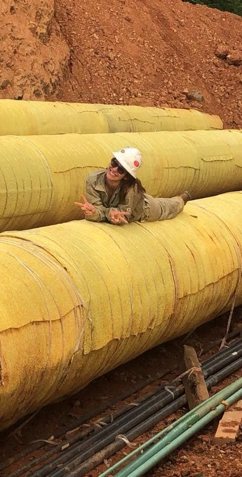

Who I Am

My name is Kali Crank, and I am a hardworking, dependable professional from Brazoria, Texas. I have experience in warehouse management, purchasing, corrections, industrial construction, and environmental services. Throughout my career I have learned the importance of teamwork, organization, communication, and safety in every job I perform.I have managed warehouse inventory, worked with vendors, processed purchase orders, maintained documentation, and supported large industrial projects. These experiences have strengthened my leadership, problem-solving, and organizational skills while preparing me for new opportunities in technology.
Education & Skills
Technical Skills
- Inventory Management
- Microsoft Excel
- Purchasing & Procurement
- Vendor Relations
- Warehouse Operations
- SAP Experience
Personal Strengths
- Leadership
- Communication
- Teamwork
- Dependability
- Problem Solving